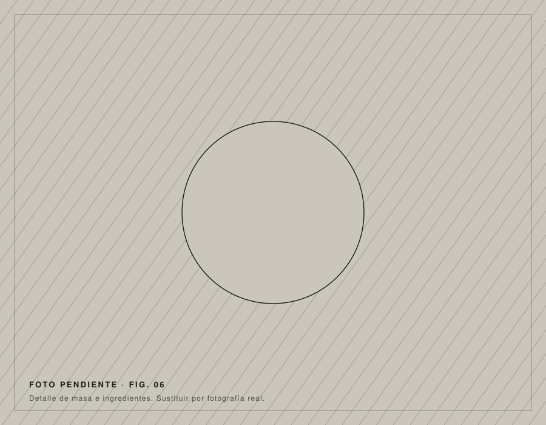

Ca s'Arquitecte · Sencelles
Concepto
Una pizzería donde la arquitectura da nombre a la carta.
01La idea

Pensar una pizza como se piensa un proyecto.
En Ca s'Arquitecte, la arquitectura forma parte de la identidad: muchas pizzas llevan el nombre de arquitectos conocidos.
Proporción, material y detalle: palabras de estudio que también sirven en la mesa.
02Los nombres
En la carta
Le Corbusier
Arquitecto suizo-francés (1887–1965).
Coderch
José Antonio Coderch, arquitecto español (1913–1984).
Alvar Aalto
Arquitecto finlandés (1898–1976).
Nota de contexto añadida por el diseñador. Se muestran solo las pizzas confirmadas; el resto de nombres de la carta está pendiente de incorporar. Ver pizzas.
03Un vocabulario compartido
- Proyecto↔Receta
- Planta↔Base
- Estructura↔Masa
- Material↔Ingrediente
- Detalle↔Acabado